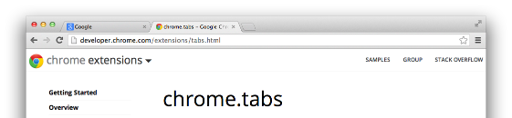

chrome.tabs
| Description: |
Use the chrome.tabs API to interact with the browser's tab system. You can use this API to create, modify, and rearrange tabs in the browser.
|
| Availability: |
Since Chrome 38.
|
| Permissions: |
The majority of the chrome.tabs API can be used without declaring
any permission.
However, the
"tabs" permission is required in order to populate the
url,
pendingUrl,
title, and
favIconUrl properties of
Tab.
|
Manifest
You can use most chrome.tabs methods and events without declaring
any permissions in the extension's manifest file.
However, if you require access to the
url,
pendingUrl,
title, or
favIconUrl properties of
tabs.Tab,
you must declare the "tabs" permission in the manifest,
as shown below:
{
"name": "My extension",
...
"permissions": [
"tabs"
],
...
}
Examples

You can find simple examples of manipulating tabs with the
chrome.tabs API in the
examples/api/tabs
directory.
For other examples and for help in viewing the source code, see
Samples.
Summary
| Types | |
|---|---|
| TabStatus | |
| MutedInfoReason | |
| MutedInfo | |
| Tab | |
| ZoomSettingsMode | |
| ZoomSettingsScope | |
| ZoomSettings | |
| WindowType | |
| Properties | |
| TAB_ID_NONE | |
| Methods | |
get −
chrome.tabs.get(integer tabId, function callback)
| |
getCurrent −
chrome.tabs.getCurrent(function callback)
| |
connect −
runtime.Port
chrome.tabs.connect(integer tabId, object connectInfo)
| |
sendRequest −
chrome.tabs.sendRequest(integer tabId, any request, function responseCallback)
| |
sendMessage −
chrome.tabs.sendMessage(integer tabId, any message, object options, function responseCallback)
| |
getSelected −
chrome.tabs.getSelected(integer windowId, function callback)
| |
getAllInWindow −
chrome.tabs.getAllInWindow(integer windowId, function callback)
| |
create −
chrome.tabs.create(object createProperties, function callback)
| |
duplicate −
chrome.tabs.duplicate(integer tabId, function callback)
| |
query −
chrome.tabs.query(object queryInfo, function callback)
| |
highlight −
chrome.tabs.highlight(object highlightInfo, function callback)
| |
update −
chrome.tabs.update(integer tabId, object updateProperties, function callback)
| |
move −
chrome.tabs.move(integer or array of integer tabIds, object moveProperties, function callback)
| |
reload −
chrome.tabs.reload(integer tabId, object reloadProperties, function callback)
| |
remove −
chrome.tabs.remove(integer or array of integer tabIds, function callback)
| |
group −
chrome.tabs.group(object options, function callback)
| |
ungroup −
chrome.tabs.ungroup(integer or array of integer tabIds, function callback)
| |
detectLanguage −
chrome.tabs.detectLanguage(integer tabId, function callback)
| |
captureVisibleTab −
chrome.tabs.captureVisibleTab(integer windowId, object options, function callback)
| |
executeScript −
chrome.tabs.executeScript(integer tabId, object details, function callback)
| |
insertCSS −
chrome.tabs.insertCSS(integer tabId, object details, function callback)
| |
removeCSS −
chrome.tabs.removeCSS(integer tabId, object details, function callback)
| |
setZoom −
chrome.tabs.setZoom(integer tabId, double zoomFactor, function callback)
| |
getZoom −
chrome.tabs.getZoom(integer tabId, function callback)
| |
setZoomSettings −
chrome.tabs.setZoomSettings(integer tabId, ZoomSettings zoomSettings, function callback)
| |
getZoomSettings −
chrome.tabs.getZoomSettings(integer tabId, function callback)
| |
discard −
chrome.tabs.discard(integer tabId, function callback)
| |
goForward −
chrome.tabs.goForward(integer tabId, function callback)
| |
goBack −
chrome.tabs.goBack(integer tabId, function callback)
| |
| Events | |
| onCreated | |
| onUpdated | |
| onMoved | |
| onSelectionChanged | |
| onActiveChanged | |
| onActivated | |
| onHighlightChanged | |
| onHighlighted | |
| onDetached | |
| onAttached | |
| onRemoved | |
| onReplaced | |
| onZoomChange | |
Types
TabStatus
| Enum |
|---|
"unloaded",
"loading",
or "complete"
|
MutedInfoReason
| Enum |
|---|
|
MutedInfo
Since Chrome 46.
| properties | ||
|---|---|---|
| boolean | muted |
Whether the tab is muted (prevented from playing sound). The tab may be muted even if it has not played or is not currently playing sound. Equivalent to whether the 'muted' audio indicator is showing. |
| MutedInfoReason | (optional) reason |
The reason the tab was muted or unmuted. Not set if the tab's mute state has never been changed. |
| string | (optional) extensionId |
The ID of the extension that changed the muted state. Not set if an extension was not the reason the muted state last changed. |
Tab
| properties | ||
|---|---|---|
| integer | (optional) id |
The ID of the tab. Tab IDs are unique within a browser session. Under some circumstances a tab may not be assigned an ID; for example, when querying foreign tabs using the sessions API, in which case a session ID may be present. Tab ID can also be set to |
| integer | index |
The zero-based index of the tab within its window. |
| integer | groupId |
Since Chrome 88. Warning: this is the current Dev channel. Learn more. The ID of the group that the tab belongs to. |
| integer | windowId |
The ID of the window that contains the tab. |
| integer | (optional) openerTabId |
The ID of the tab that opened this tab, if any. This property is only present if the opener tab still exists. |
| boolean | selected |
Deprecated since Chrome 38. Please use tabs.Tab.highlighted. Whether the tab is selected. |
| boolean | highlighted |
Whether the tab is highlighted. |
| boolean | active |
Whether the tab is active in its window. Does not necessarily mean the window is focused. |
| boolean | pinned |
Whether the tab is pinned. |
| boolean | (optional) audible |
Since Chrome 45. Whether the tab has produced sound over the past couple of seconds (but it might not be heard if also muted). Equivalent to whether the 'speaker audio' indicator is showing. |
| boolean | discarded |
Since Chrome 54. Whether the tab is discarded. A discarded tab is one whose content has been unloaded from memory, but is still visible in the tab strip. Its content is reloaded the next time it is activated. |
| boolean | autoDiscardable |
Since Chrome 54. Whether the tab can be discarded automatically by the browser when resources are low. |
| MutedInfo | (optional) mutedInfo |
Since Chrome 46. The tab's muted state and the reason for the last state change. |
| string | (optional) url |
The last committed URL of the main frame of the tab. This property is only present if the extension's manifest includes the |
| string | (optional) pendingUrl |
Since Chrome 79.
The URL the tab is navigating to, before it has committed. This property is only present if the extension's manifest includes the |
| string | (optional) title |
The title of the tab. This property is only present if the extension's manifest includes the |
| string | (optional) favIconUrl |
The URL of the tab's favicon. This property is only present if the extension's manifest includes the |
| TabStatus | (optional) status |
The tab's loading status. |
| boolean | incognito |
Whether the tab is in an incognito window. |
| integer | (optional) width |
The width of the tab in pixels. |
| integer | (optional) height |
The height of the tab in pixels. |
| string | (optional) sessionId |
The session ID used to uniquely identify a tab obtained from the sessions API. |
ZoomSettingsMode
automatic.| Enum |
|---|
|
ZoomSettingsScope
per-origin when in automatic mode, and per-tab otherwise.| Enum |
|---|
|
ZoomSettings
| properties | ||
|---|---|---|
| ZoomSettingsMode | (optional) mode |
Defines how zoom changes are handled, i.e., which entity is responsible for the actual scaling of the page; defaults to |
| ZoomSettingsScope | (optional) scope |
Defines whether zoom changes persist for the page's origin, or only take effect in this tab; defaults to |
| double | (optional) defaultZoomFactor |
Since Chrome 43. Used to return the default zoom level for the current tab in calls to tabs.getZoomSettings. |
WindowType
| Enum |
|---|
"normal",
"popup",
"panel",
"app",
or "devtools"
|
Properties
-1 |
chrome.tabs.TAB_ID_NONE |
Since Chrome 46. An ID that represents the absence of a browser tab. |
Methods
get
chrome.tabs.get(integer tabId, function callback)
getCurrent
chrome.tabs.getCurrent(function callback)
connect
runtime.Port
chrome.tabs.connect(integer tabId, object connectInfo)
Connects to the content script(s) in the specified tab. The runtime.onConnect event is fired in each content script running in the specified tab for the current extension. For more details, see Content Script Messaging.
| Parameters | ||||||||
|---|---|---|---|---|---|---|---|---|
| integer | tabId | |||||||
| object | (optional) connectInfo |
|
||||||
sendRequest
chrome.tabs.sendRequest(integer tabId, any request, function responseCallback)
Deprecated since Chrome 38. Please use runtime.sendMessage.
Sends a single request to the content script(s) in the specified tab, with an optional callback to run when a response is sent back. The extension.onRequest event is fired in each content script running in the specified tab for the current extension.
| Parameters | |||||
|---|---|---|---|---|---|
| integer | tabId | ||||
| any | request | ||||
| function | (optional) responseCallback |
If you specify the responseCallback parameter, it should be a function that looks like this: function(any response) {...};
|
|||
sendMessage
chrome.tabs.sendMessage(integer tabId, any message, object options, function responseCallback)
Sends a single message to the content script(s) in the specified tab, with an optional callback to run when a response is sent back. The runtime.onMessage event is fired in each content script running in the specified tab for the current extension.
| Parameters | |||||
|---|---|---|---|---|---|
| integer | tabId | ||||
| any | message |
The message to send. This message should be a JSON-ifiable object. |
|||
| object | (optional) options |
Since Chrome 41.
|
|||
| function | (optional) responseCallback |
If you specify the responseCallback parameter, it should be a function that looks like this: function(any response) {...};
|
|||
getSelected
chrome.tabs.getSelected(integer windowId, function callback)
Deprecated since Chrome 38.
Please use tabs.query {active: true}.
Gets the tab that is selected in the specified window.
| Parameters | |||||
|---|---|---|---|---|---|
| integer | (optional) windowId |
Defaults to the current window. |
|||
| function | callback |
The callback parameter should be a function that looks like this: function( Tab tab) {...};
|
|||
getAllInWindow
chrome.tabs.getAllInWindow(integer windowId, function callback)
Deprecated since Chrome 38.
Please use tabs.query {windowId: windowId}.
Gets details about all tabs in the specified window.
| Parameters | |||||
|---|---|---|---|---|---|
| integer | (optional) windowId |
Defaults to the current window. |
|||
| function | callback |
The callback parameter should be a function that looks like this: function(array of Tab tabs) {...};
|
|||
create
chrome.tabs.create(object createProperties, function callback)
Creates a new tab.
| Parameters | |||||||||||||||||||||||
|---|---|---|---|---|---|---|---|---|---|---|---|---|---|---|---|---|---|---|---|---|---|---|---|
| object | createProperties |
|
|||||||||||||||||||||
| function | (optional) callback |
If you specify the callback parameter, it should be a function that looks like this: function( Tab tab) {...};
|
|||||||||||||||||||||
duplicate
chrome.tabs.duplicate(integer tabId, function callback)
Duplicates a tab.
| Parameters | |||||
|---|---|---|---|---|---|
| integer | tabId |
The ID of the tab to duplicate. |
|||
| function | (optional) callback |
If you specify the callback parameter, it should be a function that looks like this: function( Tab tab) {...};
|
|||
query
chrome.tabs.query(object queryInfo, function callback)
Gets all tabs that have the specified properties, or all tabs if no properties are specified.
| Parameters | ||||||||||||||||||||||||||||||||||||||||||||||||||
|---|---|---|---|---|---|---|---|---|---|---|---|---|---|---|---|---|---|---|---|---|---|---|---|---|---|---|---|---|---|---|---|---|---|---|---|---|---|---|---|---|---|---|---|---|---|---|---|---|---|---|
| object | queryInfo |
|
||||||||||||||||||||||||||||||||||||||||||||||||
| function | callback |
The callback parameter should be a function that looks like this: function(array of Tab result) {...};
|
||||||||||||||||||||||||||||||||||||||||||||||||
highlight
chrome.tabs.highlight(object highlightInfo, function callback)
Highlights the given tabs and focuses on the first of group. Will appear to do nothing if the specified tab is currently active.
| Parameters | ||||||||
|---|---|---|---|---|---|---|---|---|
| object | highlightInfo |
|
||||||
| function | (optional) callback |
If you specify the callback parameter, it should be a function that looks like this: function( windows.Window window) {...};
|
||||||
update
chrome.tabs.update(integer tabId, object updateProperties, function callback)
Modifies the properties of a tab. Properties that are not specified in updateProperties are not modified.
| Parameters | ||||||||||||||||||||||||||
|---|---|---|---|---|---|---|---|---|---|---|---|---|---|---|---|---|---|---|---|---|---|---|---|---|---|---|
| integer | (optional) tabId |
Defaults to the selected tab of the current window. |
||||||||||||||||||||||||
| object | updateProperties |
|
||||||||||||||||||||||||
| function | (optional) callback |
If you specify the callback parameter, it should be a function that looks like this: function( Tab tab) {...};
|
||||||||||||||||||||||||
move
chrome.tabs.move(integer or array of integer tabIds, object moveProperties, function callback)
Moves one or more tabs to a new position within its window, or to a new window. Note that tabs can only be moved to and from normal (window.type === "normal") windows.
| Parameters | ||||||||
|---|---|---|---|---|---|---|---|---|
| integer or array of integer | tabIds |
The tab ID or list of tab IDs to move. |
||||||
| object | moveProperties |
|
||||||
| function | (optional) callback |
If you specify the callback parameter, it should be a function that looks like this: function( Tab or array of Tab tabs) {...};
|
||||||
reload
chrome.tabs.reload(integer tabId, object reloadProperties, function callback)
Reload a tab.
| Parameters | |||||
|---|---|---|---|---|---|
| integer | (optional) tabId |
The ID of the tab to reload; defaults to the selected tab of the current window. |
|||
| object | (optional) reloadProperties |
|
|||
| function | (optional) callback |
If you specify the callback parameter, it should be a function that looks like this: function() {...};
|
|||
remove
chrome.tabs.remove(integer or array of integer tabIds, function callback)
Closes one or more tabs.
| Parameters | ||
|---|---|---|
| integer or array of integer | tabIds |
The tab ID or list of tab IDs to close. |
| function | (optional) callback |
If you specify the callback parameter, it should be a function that looks like this: function() {...};
|
group
chrome.tabs.group(object options, function callback)
Since Chrome 88. Warning: this is the current Dev channel. Learn more.
Adds one or more tabs to a specified group, or if no group is specified, adds the given tabs to a newly created group.
| Parameters | ||||||||||||||
|---|---|---|---|---|---|---|---|---|---|---|---|---|---|---|
| object | options |
|
||||||||||||
| function | (optional) callback |
If you specify the callback parameter, it should be a function that looks like this: function(integer groupId) {...};
|
||||||||||||
ungroup
chrome.tabs.ungroup(integer or array of integer tabIds, function callback)
Since Chrome 88. Warning: this is the current Dev channel. Learn more.
Removes one or more tabs from their respective groups. If any groups become empty, they are deleted.
| Parameters | ||
|---|---|---|
| integer or array of integer | tabIds |
The tab ID or list of tab IDs to remove from their respective groups. |
| function | (optional) callback |
If you specify the callback parameter, it should be a function that looks like this: function() {...};
|
detectLanguage
chrome.tabs.detectLanguage(integer tabId, function callback)
Detects the primary language of the content in a tab.
| Parameters | |||||
|---|---|---|---|---|---|
| integer | (optional) tabId |
Defaults to the active tab of the current window. |
|||
| function | callback |
The callback parameter should be a function that looks like this: function(string language) {...};
|
|||
captureVisibleTab
chrome.tabs.captureVisibleTab(integer windowId, object options, function callback)
Captures the visible area of the currently active tab in the specified window. In order to call this method, the extension must have either the <all_urls> permission or the activeTab permission. In addition to sites that extensions can normally access, this method allows extensions to capture sensitive sites that are otherwise restricted, including chrome:-scheme pages, other extensions' pages, and data: URLs. These sensitive sites can only be captured with the activeTab permission. File URLs may be captured only if the extension has been granted file access.
| Parameters | ||||||||
|---|---|---|---|---|---|---|---|---|
| integer | (optional) windowId |
The target window. Defaults to the current window. |
||||||
| object | (optional) options |
Details about the format and quality of an image.
|
||||||
| function | callback |
The callback parameter should be a function that looks like this: function(string dataUrl) {...};
|
||||||
executeScript
chrome.tabs.executeScript(integer tabId, object details, function callback)
Injects JavaScript code into a page. For details, see the programmatic injection section of the content scripts doc.
| Parameters | |||||||||||||||||||||||
|---|---|---|---|---|---|---|---|---|---|---|---|---|---|---|---|---|---|---|---|---|---|---|---|
| integer | (optional) tabId |
The ID of the tab in which to run the script; defaults to the active tab of the current window. |
|||||||||||||||||||||
| object | details |
Details of the script to run. Either the code or the file property must be set, but both may not be set at the same time.
|
|||||||||||||||||||||
| function | (optional) callback |
Called after all the JavaScript has been executed. If you specify the callback parameter, it should be a function that looks like this: function(array of any result) {...};
|
|||||||||||||||||||||
insertCSS
chrome.tabs.insertCSS(integer tabId, object details, function callback)
Injects CSS into a page. For details, see the programmatic injection section of the content scripts doc.
| Parameters | |||||||||||||||||||||||
|---|---|---|---|---|---|---|---|---|---|---|---|---|---|---|---|---|---|---|---|---|---|---|---|
| integer | (optional) tabId |
The ID of the tab in which to insert the CSS; defaults to the active tab of the current window. |
|||||||||||||||||||||
| object | details |
Details of the CSS text to insert. Either the code or the file property must be set, but both may not be set at the same time.
|
|||||||||||||||||||||
| function | (optional) callback |
Called when all the CSS has been inserted. If you specify the callback parameter, it should be a function that looks like this: function() {...};
|
|||||||||||||||||||||
removeCSS
chrome.tabs.removeCSS(integer tabId, object details, function callback)
Since Chrome 87.
Removes from a page CSS that was previously injected by a call to tabs.insertCSS.
| Parameters | ||||||||||||||||||||
|---|---|---|---|---|---|---|---|---|---|---|---|---|---|---|---|---|---|---|---|---|
| integer | (optional) tabId |
The ID of the tab from which to remove the CSS; defaults to the active tab of the current window. |
||||||||||||||||||
| object | details |
Details of the CSS text to remove. Either the code or the file property must be set, but both may not be set at the same time.
|
||||||||||||||||||
| function | (optional) callback |
Called when all the CSS has been removed. If you specify the callback parameter, it should be a function that looks like this: function() {...};
|
||||||||||||||||||
setZoom
chrome.tabs.setZoom(integer tabId, double zoomFactor, function callback)
Since Chrome 42.
Zooms a specified tab.
| Parameters | ||
|---|---|---|
| integer | (optional) tabId |
Since Chrome 38. The ID of the tab to zoom; defaults to the active tab of the current window. |
| double | zoomFactor |
Since Chrome 38.
The new zoom factor. A value of |
| function | (optional) callback |
Called after the zoom factor has been changed. If you specify the callback parameter, it should be a function that looks like this: function() {...};
|
getZoom
chrome.tabs.getZoom(integer tabId, function callback)
Since Chrome 42.
Gets the current zoom factor of a specified tab.
| Parameters | |||||
|---|---|---|---|---|---|
| integer | (optional) tabId |
Since Chrome 38. The ID of the tab to get the current zoom factor from; defaults to the active tab of the current window. |
|||
| function | callback |
Called with the tab's current zoom factor after it has been fetched. The callback parameter should be a function that looks like this: function(double zoomFactor) {...};
|
|||
setZoomSettings
chrome.tabs.setZoomSettings(integer tabId, ZoomSettings zoomSettings, function callback)
Since Chrome 42.
Sets the zoom settings for a specified tab, which define how zoom changes are handled. These settings are reset to defaults upon navigating the tab.
| Parameters | ||
|---|---|---|
| integer | (optional) tabId |
Since Chrome 38. The ID of the tab to change the zoom settings for; defaults to the active tab of the current window. |
| ZoomSettings | zoomSettings |
Since Chrome 38. Defines how zoom changes are handled and at what scope. |
| function | (optional) callback |
Called after the zoom settings are changed. If you specify the callback parameter, it should be a function that looks like this: function() {...};
|
getZoomSettings
chrome.tabs.getZoomSettings(integer tabId, function callback)
Since Chrome 42.
Gets the current zoom settings of a specified tab.
| Parameters | |||||
|---|---|---|---|---|---|
| integer | (optional) tabId |
Since Chrome 38. The ID of the tab to get the current zoom settings from; defaults to the active tab of the current window. |
|||
| function | callback |
Called with the tab's current zoom settings. The callback parameter should be a function that looks like this: function( ZoomSettings zoomSettings) {...};
|
|||
discard
chrome.tabs.discard(integer tabId, function callback)
Since Chrome 54.
Discards a tab from memory. Discarded tabs are still visible on the tab strip and are reloaded when activated.
| Parameters | |||||
|---|---|---|---|---|---|
| integer | (optional) tabId |
The ID of the tab to be discarded. If specified, the tab is discarded unless it is active or already discarded. If omitted, the browser discards the least important tab. This can fail if no discardable tabs exist. |
|||
| function | (optional) callback |
Called after the operation is completed. If you specify the callback parameter, it should be a function that looks like this: function( Tab tab) {...};
|
|||
goForward
chrome.tabs.goForward(integer tabId, function callback)
Since Chrome 72.
Go foward to the next page, if one is available.
| Parameters | ||
|---|---|---|
| integer | (optional) tabId |
The ID of the tab to navigate forward; defaults to the selected tab of the current window. |
| function | (optional) callback |
If you specify the callback parameter, it should be a function that looks like this: function() {...};
|
goBack
chrome.tabs.goBack(integer tabId, function callback)
Since Chrome 72.
Go back to the previous page, if one is available.
| Parameters | ||
|---|---|---|
| integer | (optional) tabId |
The ID of the tab to navigate back; defaults to the selected tab of the current window. |
| function | (optional) callback |
If you specify the callback parameter, it should be a function that looks like this: function() {...};
|
Events
onCreated
Fired when a tab is created. Note that the tab's URL may not be set at the time this event is fired, but you can listen to onUpdated events so as to be notified when a URL is set.
onUpdated
Fired when a tab is updated.
addListener
chrome.tabs.onUpdated.addListener(function callback)
| Parameters | |||||||||||||||||||||||||||||||||||||||||
|---|---|---|---|---|---|---|---|---|---|---|---|---|---|---|---|---|---|---|---|---|---|---|---|---|---|---|---|---|---|---|---|---|---|---|---|---|---|---|---|---|---|
| function | callback |
The callback parameter should be a function that looks like this: function(integer tabId, object changeInfo, Tab tab) {...};
|
|||||||||||||||||||||||||||||||||||||||
onMoved
Fired when a tab is moved within a window. Only one move event is fired, representing the tab the user directly moved. Move events are not fired for the other tabs that must move in response to the manually-moved tab. This event is not fired when a tab is moved between windows; for details, see tabs.onDetached.
addListener
chrome.tabs.onMoved.addListener(function callback)
| Parameters | |||||||||||||||||
|---|---|---|---|---|---|---|---|---|---|---|---|---|---|---|---|---|---|
| function | callback |
The callback parameter should be a function that looks like this: function(integer tabId, object moveInfo) {...};
|
|||||||||||||||
onSelectionChanged
Deprecated since Chrome 38. Please use tabs.onActivated.
Fires when the selected tab in a window changes.
addListener
chrome.tabs.onSelectionChanged.addListener(function callback)
| Parameters | |||||||||||
|---|---|---|---|---|---|---|---|---|---|---|---|
| function | callback |
The callback parameter should be a function that looks like this: function(integer tabId, object selectInfo) {...};
|
|||||||||
onActiveChanged
Deprecated since Chrome 38. Please use tabs.onActivated.
Fires when the selected tab in a window changes. Note that the tab's URL may not be set at the time this event fired, but you can listen to tabs.onUpdated events so as to be notified when a URL is set.
addListener
chrome.tabs.onActiveChanged.addListener(function callback)
| Parameters | |||||||||||
|---|---|---|---|---|---|---|---|---|---|---|---|
| function | callback |
The callback parameter should be a function that looks like this: function(integer tabId, object selectInfo) {...};
|
|||||||||
onActivated
Fires when the active tab in a window changes. Note that the tab's URL may not be set at the time this event fired, but you can listen to onUpdated events so as to be notified when a URL is set.
addListener
chrome.tabs.onActivated.addListener(function callback)
| Parameters | |||||||||||
|---|---|---|---|---|---|---|---|---|---|---|---|
| function | callback |
The callback parameter should be a function that looks like this: function(object activeInfo) {...};
|
|||||||||
onHighlightChanged
Deprecated since Chrome 38. Please use tabs.onHighlighted.
Fired when the highlighted or selected tabs in a window changes.
addListener
chrome.tabs.onHighlightChanged.addListener(function callback)
| Parameters | |||||||||||
|---|---|---|---|---|---|---|---|---|---|---|---|
| function | callback |
The callback parameter should be a function that looks like this: function(object selectInfo) {...};
|
|||||||||
onHighlighted
Fired when the highlighted or selected tabs in a window changes.
addListener
chrome.tabs.onHighlighted.addListener(function callback)
| Parameters | |||||||||||
|---|---|---|---|---|---|---|---|---|---|---|---|
| function | callback |
The callback parameter should be a function that looks like this: function(object highlightInfo) {...};
|
|||||||||
onDetached
Fired when a tab is detached from a window; for example, because it was moved between windows.
addListener
chrome.tabs.onDetached.addListener(function callback)
| Parameters | ||||||||||||||
|---|---|---|---|---|---|---|---|---|---|---|---|---|---|---|
| function | callback |
The callback parameter should be a function that looks like this: function(integer tabId, object detachInfo) {...};
|
||||||||||||
onAttached
Fired when a tab is attached to a window; for example, because it was moved between windows.
addListener
chrome.tabs.onAttached.addListener(function callback)
| Parameters | ||||||||||||||
|---|---|---|---|---|---|---|---|---|---|---|---|---|---|---|
| function | callback |
The callback parameter should be a function that looks like this: function(integer tabId, object attachInfo) {...};
|
||||||||||||
onRemoved
Fired when a tab is closed.
addListener
chrome.tabs.onRemoved.addListener(function callback)
| Parameters | ||||||||||||||
|---|---|---|---|---|---|---|---|---|---|---|---|---|---|---|
| function | callback |
The callback parameter should be a function that looks like this: function(integer tabId, object removeInfo) {...};
|
||||||||||||
onReplaced
Fired when a tab is replaced with another tab due to prerendering or instant.
addListener
chrome.tabs.onReplaced.addListener(function callback)
| Parameters | ||||||||
|---|---|---|---|---|---|---|---|---|
| function | callback |
The callback parameter should be a function that looks like this: function(integer addedTabId, integer removedTabId) {...};
|
||||||
onZoomChange
Fired when a tab is zoomed.
addListener
chrome.tabs.onZoomChange.addListener(function callback)
| Parameters | |||||||||||||||||
|---|---|---|---|---|---|---|---|---|---|---|---|---|---|---|---|---|---|
| function | callback |
The callback parameter should be a function that looks like this: function(object ZoomChangeInfo) {...};
|
|||||||||||||||